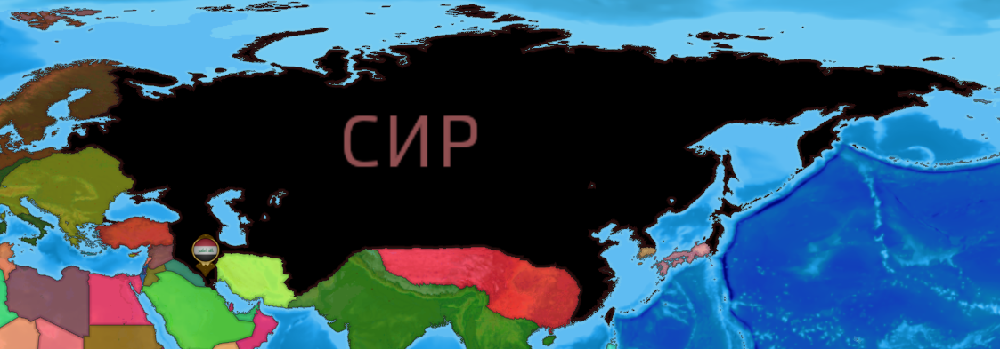
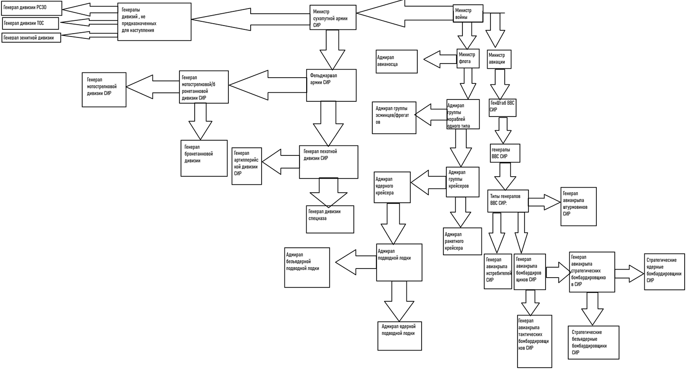

СИР
Основы СИР
СИР-государство,расположенное в Евразии.
Границы СИР:

СИР не имеет определенного правителя, и управляется местными чиновниками, которые подчиняются Москве и ключевыми министрами.
1.Армия:

Объяснение армии:
1.Министр войны: верховный главнокомандующий войск СИР
Авиация
2.Министр авиации: глава ГенШтаба ВВС СИР
3.Генштаб ВВС СИР - все генералы ВВС СИР
4.Генерал авиакрыла штурмовиков - глава авиакрыла, состоящего из штурмовиков.
5.В СИР штурмовики - самолеты,специализирующиеся на нанесении авиаударов по военной технике или логистике врага. Действуют на расстоянии до 1000 км
6.Генерал авиакрыла истребителей - глава авиакрыла, состоящего из истребителей
7.В СИР Истребители - самолеты,специализирующиеся на уничтожении вражеской авиации.Действуют на расстоянии до 1500 км
8.Генерал авиакрыла бомбардировщиков - генерал авиакрыла,состояжего из бомбардировщиков
9.В армии СИР бомбардиорвщики делятся на 2 вида:
10.Тактические - наносят авиаудары по вражеской промышленности на расстоянии до 3000 км
11.Стратегические - наносят удары по страегическим объектам на расстоянии от 3000 до 5000 км
12.Стратегические бомбардировщики делятся на:
13.Ядерные - способные нести ядерное оружие
14.Безъядерные - неспособные нести ядерное оружие
Флот
Сухопутная армия:
27.Министр сухопутной армии: Глава ГенШтаба Армии СИР
28.Фельдмаршал армии СИР - второй в ГенШтабе после министра
29.Генерал пехотной дивизии - глава дивизии, не оснащенной военной техникой:
30.Артиллерийская дивизия
31.Дивизия спецназа
32.Генерал мотострелковой дивизии - глава дивизии, оснащенной БМП/БТР
33.Генерал бронетанковой дивизии - глава дивизии, оснащенной танками
34.Генералы дивизий,не предназначенных для наступление - глава дивизии, которая необходима для нанесения максимального ущерба врагу без значительного продвижения на территориях
35.Также СИР имеет ракетные шахты, сильнейшие системы РЭБ и т.д., технологии и расположение которых строго засекречено.За раззлашение полагается расстрел